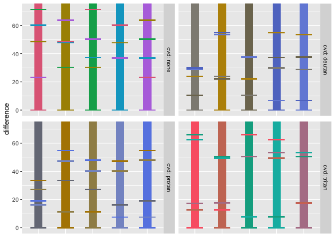
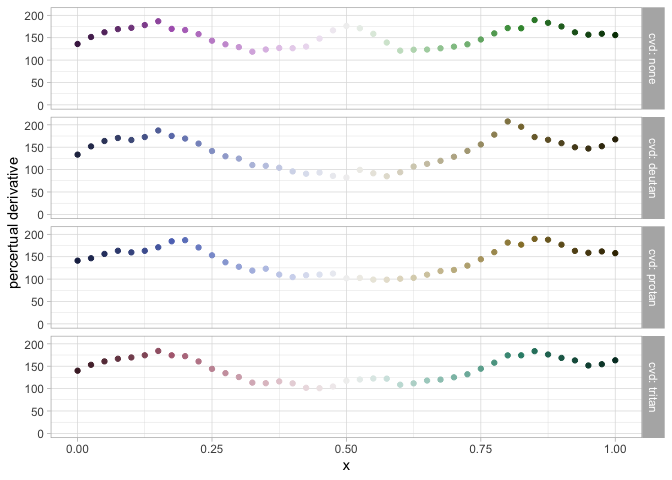

The goal of paleval is to help you evaluate the effectiveness of color palettes and color maps. It builds from the colorspace package, used to design color maps, and the farver package, used to evaluate the perceptual difference between two colors.
This will have to go into a design-document eventually, but for now, I’ll “puke” this here.
For the purpose of this package, following colorRamp and ggplot2 usage, we define some classes:
pev_fcont: A function that describes a continuous palette. When called with a numeric vector with values between 0 and 1, it returns a vector of the corresponding (hex-code) values.-
pev_fdisc: A function that describes a discrete palette. When called with a single integer argument (the number of levels in the scale), it returns a vector of the (hex-code) value for the entire scale. There are two types of discrete-palette functions:pev_bounded: Indicates that there is an upper-bound on the number of colors it can provide, e.g. Tableau 10. You would not think to interpolate between these colors.pev_unbounded: Indicates that there is no upper-bound on the number of colors it can provide, e.g. Tableau 10. You might think to interpolate between these colors.
These follow the palette argument for ggplot2::continuous_scale() and ggplot2::discrete_scale(), as well as graphics::colorRamp() and graphics::colorRampPalette(), respectively.
I’m suspect I’m doing things in a way that the authors of colorspace, ggplot2, farver, and graphics might prefer not to consider while eating. As much as anything, this package is an attempt to reationalize and harmonize all of these concepts to myself.
There are ways to create continuous-palette functions:
-
pev_fcont(): constructor- takes a vector (more than one) of hex-colors to be interpolated.
- takes a (one) name of a colorspace palette.
- takes a set of HCL parameters, following the colorspace framework.
- takes a function.
- takes a
pev_fcont(no-op).
-
pev_fcont_cvd(): modifies the output of the palette function according to color-vision deficiency. -
pev_fcont_diverging(): composes two continuous-palette functions to create (presumably) a diverging palette-function. It’s up to you to make sure the constituent palettes “meet in the middle”. -
pev_fcont_rescale(): rescaling an existing continuous-palette function. It may make sense to “zoom-in”, but “zooming-out” could get you into trouble. -
pev_fcont_reverse(): reverses the sense of the palette function.
There are ways to create discrete-palette functions:
-
pev_fdisc(): constructor- takes a vector of hex-colors, returns a bounded function.
- takes a
pev_fcont, given a discretizationmethod(e.g."panel"or"post"), returns an unbounded function. - takes a
pev_fdisc(no-op).
pev_fdisc_cvd(): modifies the output of the palette function according to color-vision deficiency.pev_fdisc_reverse(): reverses the sense of the palette function.print(): prints a representation of the palette function.
Other functions:
pev_nmax(): get the maximum length supported by a discrete-palette function-
pev_hex_distance(): given two (sets of) hex-colors,hex,hex_ref:- return the perceptual
distancebetween them
- return the perceptual
-
pev_data_separation(): assess color-separation, given a discrete-palette function,- return
data.framewithcvd,i,hex,hex_ref,distance
- return
-
pev_data_derivative(): assess perceptual-derivative, given a continuous-palette function,- return
data.framewithcvd,x,hex,d_distance_d_x
- return
-
pev_data_distance(): assess perceptual-distance from a reference-color, given a continuous-palette function,- return
data.framewithcvd,x,hex,hex_ref,distance
- return
pev_gg_distance()-
pev_data_spectrum(): assess HCL and RGB spectrum for continuous-palette functions, given a continuous-palette function,- return
data.framewithx,dimension,value
- return
-
pev_data_spectrum_hex()- return
data.framewithx,dimension,value,hex_ref
- return
pev_gg_spectrum()pev_gg_bloom()
Installation
You can install the development version of paleval from GitHub with:
Example
library("paleval")
fcont <- pev_fcont("Dynamic") # continuous palette-function, from colorspace
fdisc <- pev_fdisc(fcont, method = "panel") # discrete palette-function
data_sep <- pev_data_separation(fdisc(7))
print(data_sep)
#> # A tibble: 196 x 5
#> cvd i hex hex_ref distance
#> <chr> <int> <chr> <chr> <dbl>
#> 1 none 1 #E396A0 #E396A0 0
#> 2 none 1 #E396A0 #D796D0 14.9
#> 3 none 1 #E396A0 #9FA8E2 26.4
#> 4 none 1 #E396A0 #4CB9CC 53.6
#> 5 none 1 #E396A0 #50BE9B 53.0
#> 6 none 1 #E396A0 #97B56C 45.3
#> 7 none 1 #E396A0 #CBA56E 27.1
#> 8 none 2 #D796D0 #E396A0 14.9
#> 9 none 2 #D796D0 #D796D0 0
#> 10 none 2 #D796D0 #9FA8E2 18.3
#> # … with 186 more rows
pev_gg_separation(data_sep)
data_drv <- pev_data_derivative("Purple-Green")
data_drv
#> # A tibble: 164 x 4
#> cvd x hex d_distance_d_x
#> <chr> <dbl> <chr> <dbl>
#> 1 none 0 #492050 136.
#> 2 none 0.025 #562A5E 152.
#> 3 none 0.05 #65346D 162.
#> 4 none 0.075 #733F7C 169.
#> 5 none 0.1 #82498C 172.
#> 6 none 0.125 #90529C 178.
#> 7 none 0.15 #9F5CAB 187.
#> 8 none 0.175 #AE65BB 170.
#> 9 none 0.2 #B574C2 167.
#> 10 none 0.225 #BD82C9 158.
#> # … with 154 more rows
pev_gg_derivative(data_drv)
Code of Conduct
Please note that the ‘paleval’ project is released with a Contributor Code of Conduct. By contributing to this project, you agree to abide by its terms.